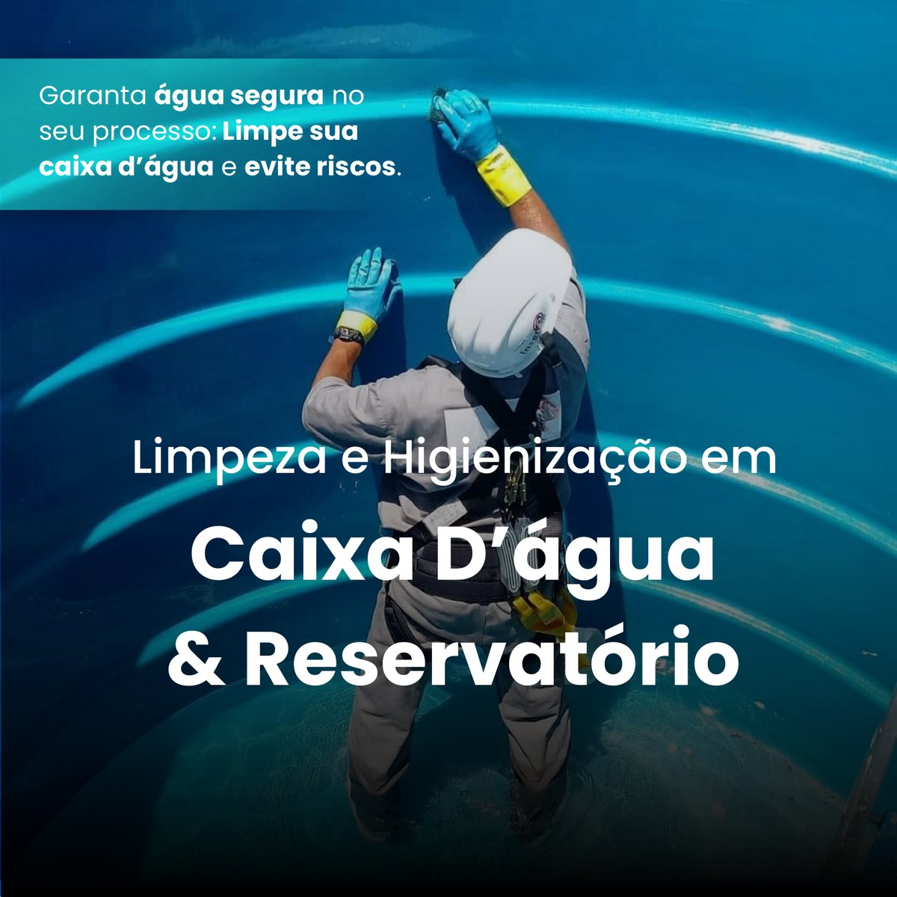
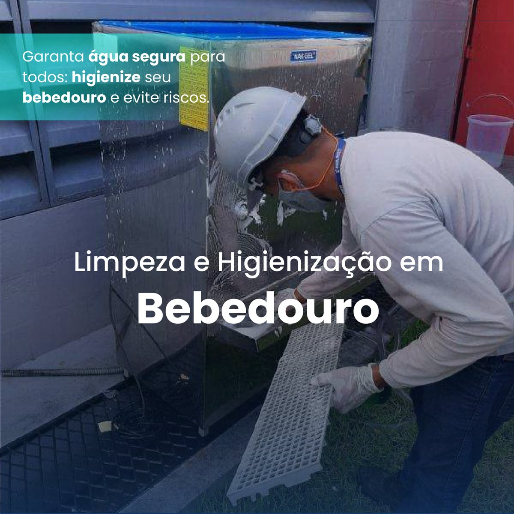
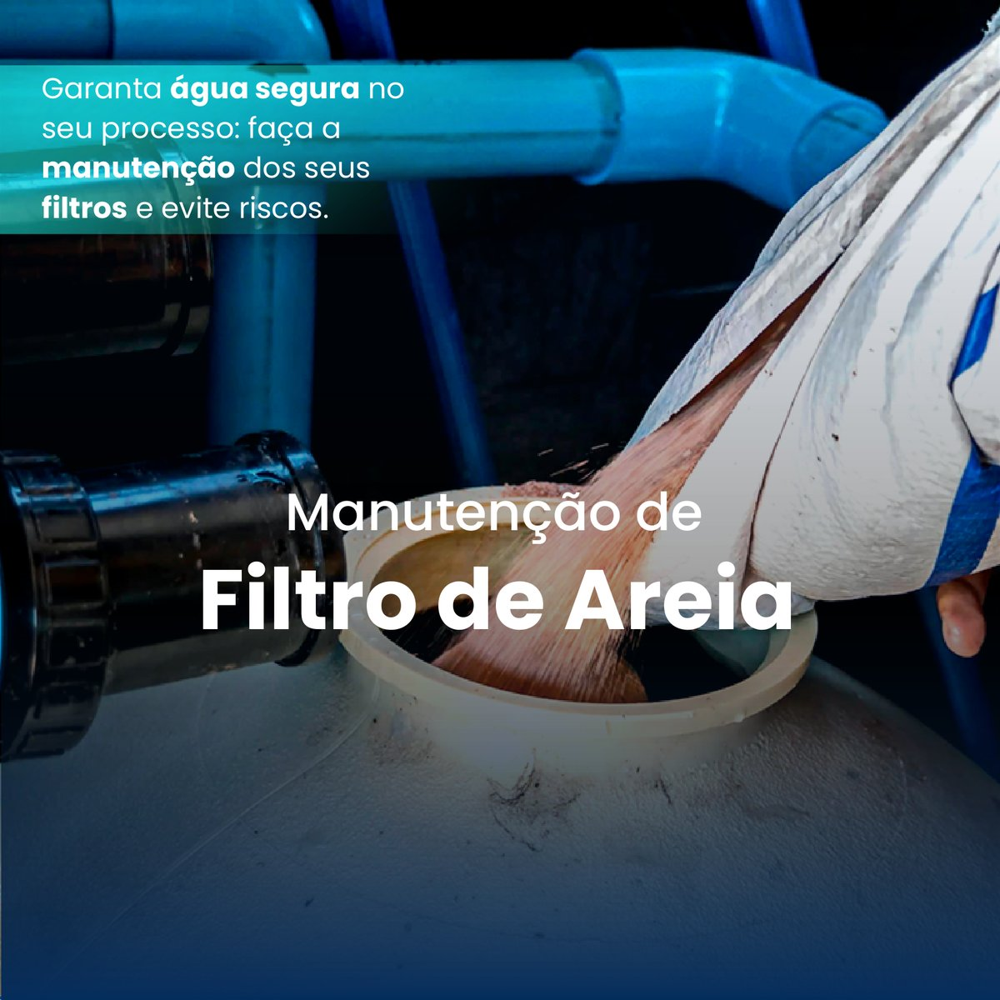
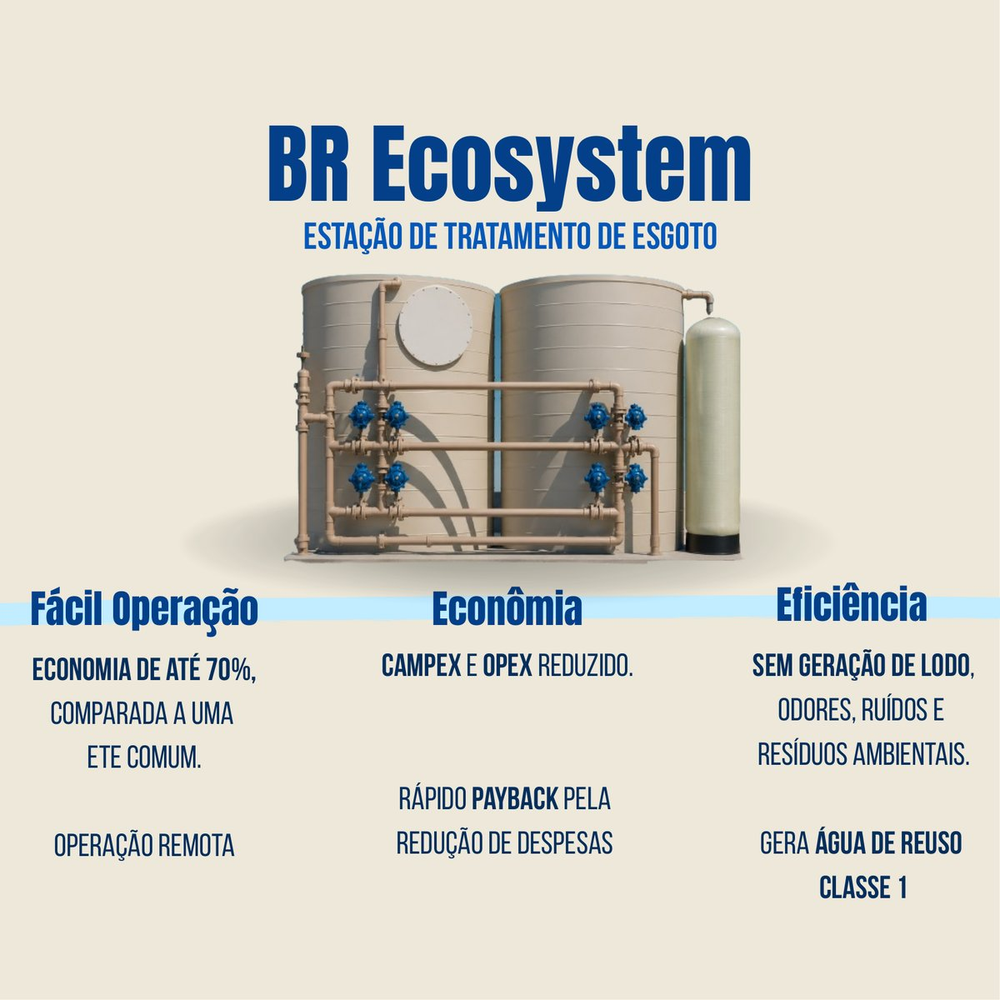
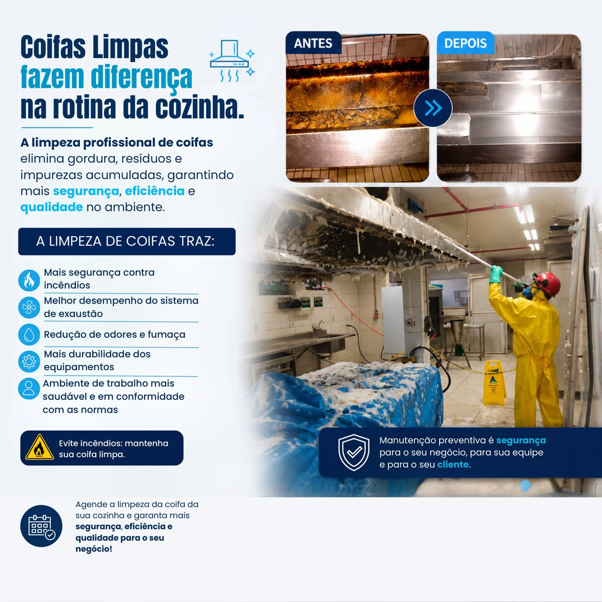
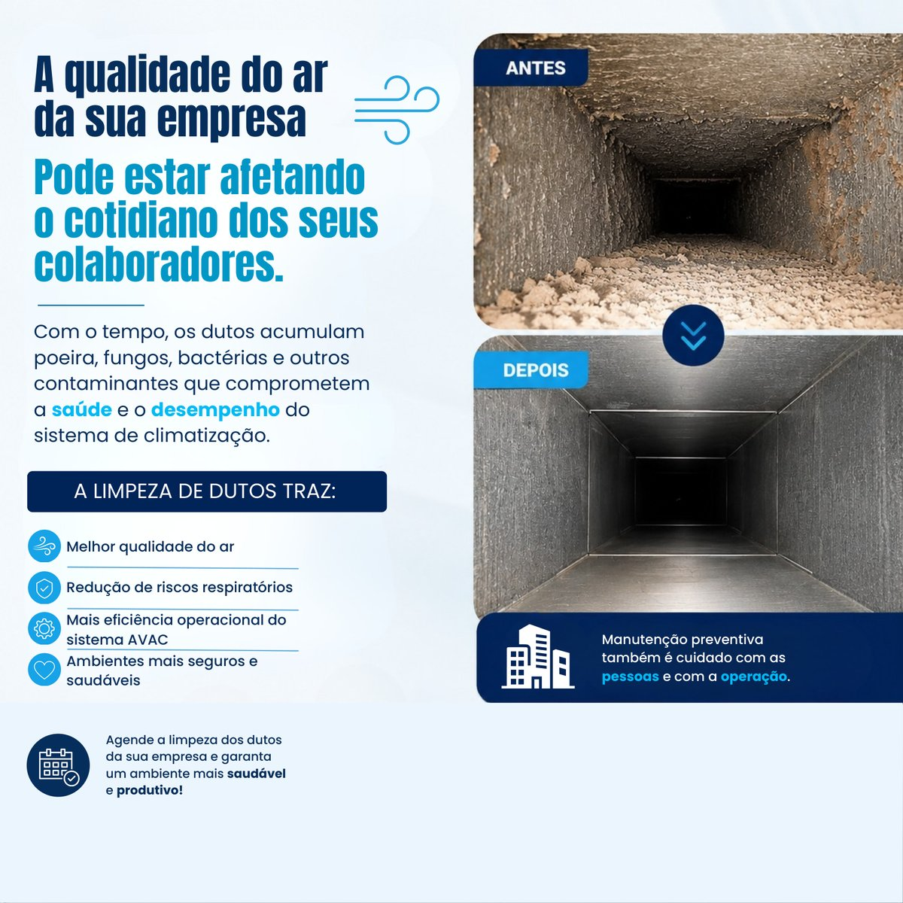

Soluções completas para implantação, operação, manutenção e higienização de sistemas de tratamento de água.






Projetamos, fabricamos e implantamos a solução ideal com investimento próprio. O cliente paga mensalmente e recebe a planta ao final do contrato. Toda a responsabilidade técnica é nossa durante a vigência.
Entre em contato para uma análise técnica gratuita e receba uma proposta personalizada.